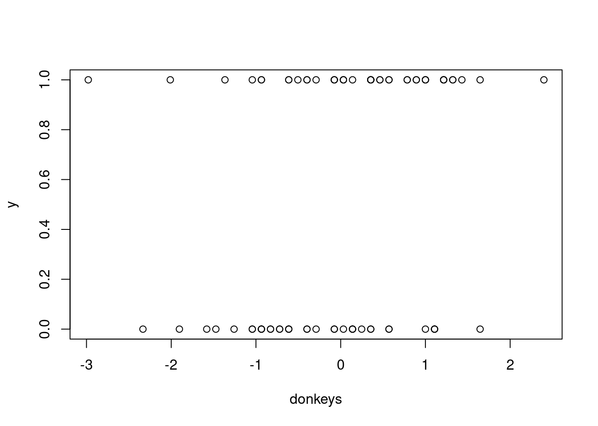
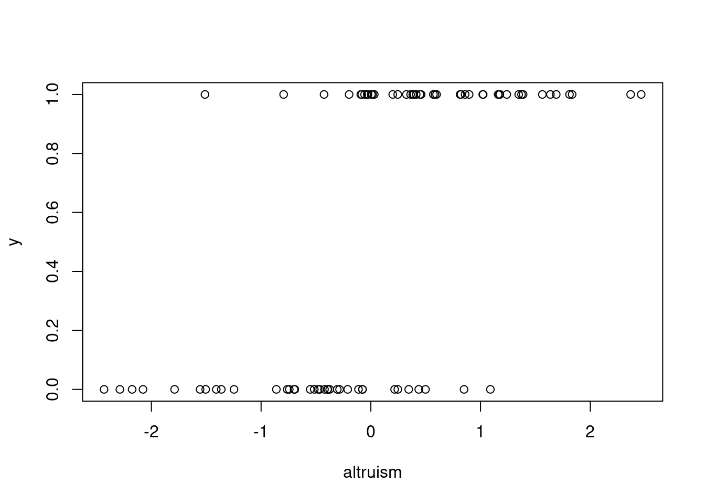
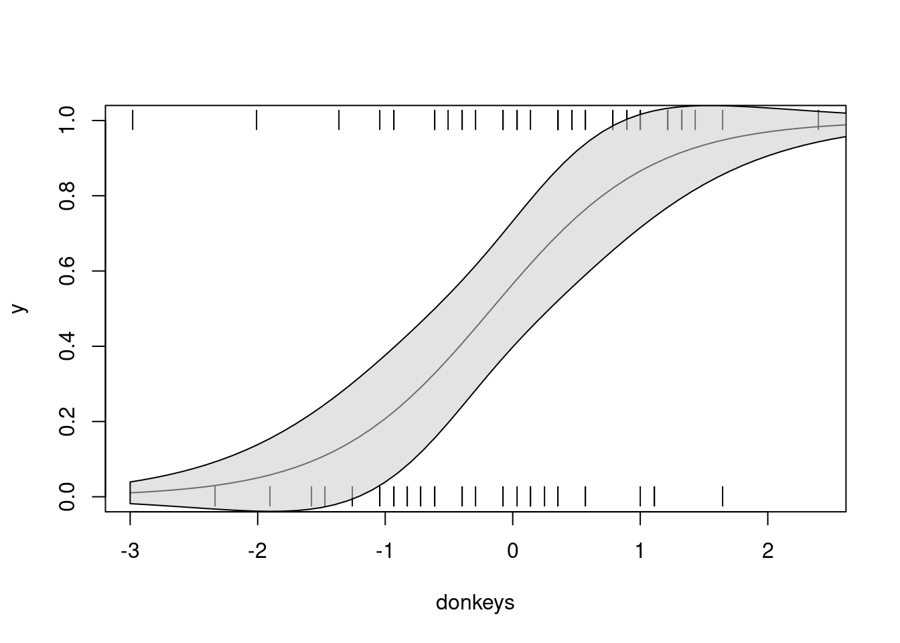
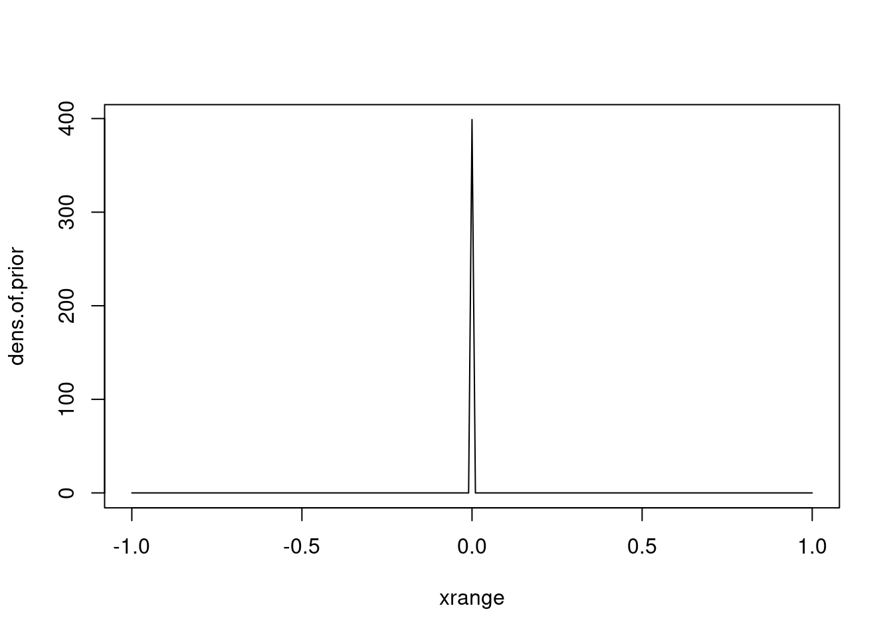
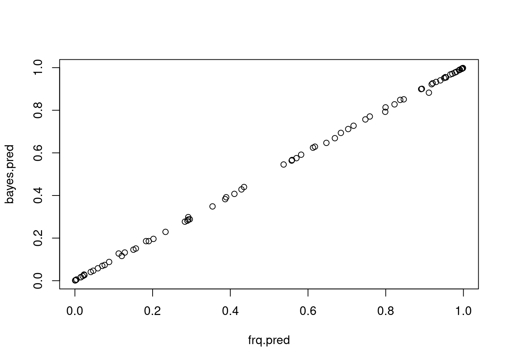
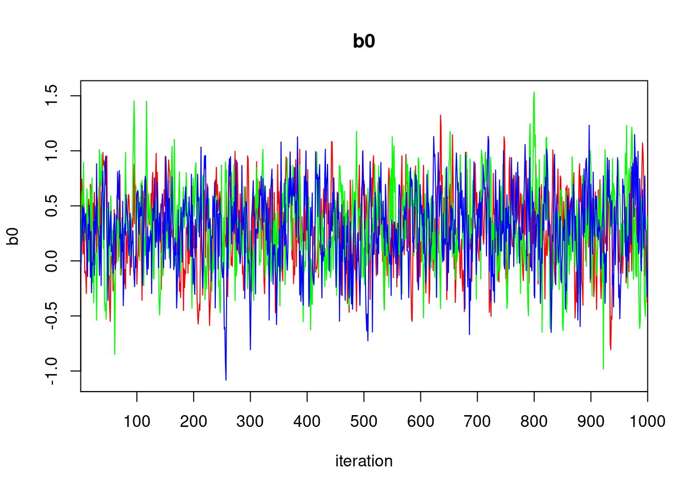
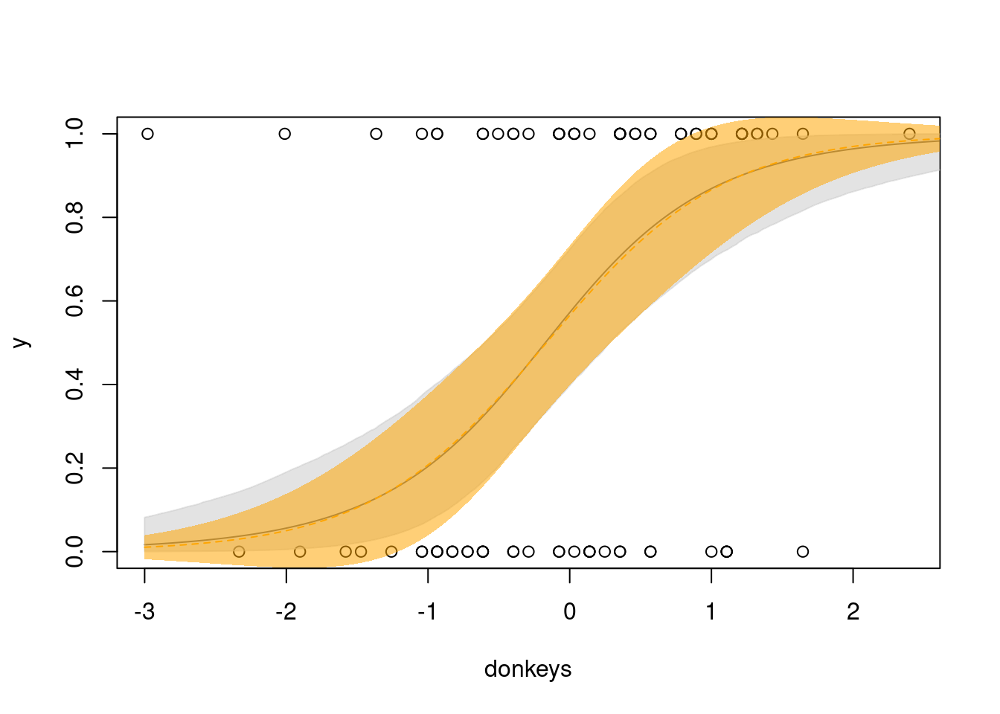

10 Bayesian models
The example we are working with this week is vampire bats. One question we might ask about this system is how bat survival (\(y\)) depends on the number of food sources (donkeys) nearby, and on how altruistic its neighbors are. Our response variable (survival) is a Bernoulli distributed random variable because it can only take values of 0 or 1. This means we can predict probability of survival with a logistic regression using a logit link. If we denote the number of donkeys as \(x_1\) and neighbor altruism as \(x_2\), we can write out our model as:
\[ y_i \sim Binom(p_i, N)\\ logit(p_i) = \beta_0 + \beta_1*x_{1_i} + \beta_2*x_{2_i} \]
10.1 Simulate vampire bat survival
Let’s simulate a dataset representing this scenario.
# How many bats?
n.obs <- 80
# Simulate covariates / predictor values
# Let's say that on average, there are 100 donkeys nearby
n.donkeys <- rpois(n.obs, lambda=100)
# To get more sensible outputs from the model, we will scale this predictor
donkeys <- as.numeric(scale(n.donkeys))
# Let's say altruism is normally distributed, centered on 0
altruism <- rnorm(n.obs, mean=0, sd=1)
# Effect size guesstimates
b0 <- 0.2 # intercept
bd <- 1.8 # effect of nearby donkey density
ba <- 2.5 # effect of neighbor altruism
# To simulate our response variable, we need it to be related to the predictor
# variables based on our selected effect values. Why? So that we know the model
# is doing what we think it is. But we also NEED to include the stochastic
# component because our response is a random variable
# Use the covariates and effects to generate the deterministically
# This represents the vector of probabilities for each individual bat
# Because our response is binomial, we will use a logit link
# This is the deterministic part of the model
# You will get the SAME answer every time
det <- plogis(b0 + bd*donkeys + ba*altruism)
# Draw the response variable stochastically using the rbinom function
y <- rbinom(n.obs, size=1, prob=det)
# Plot our simulated data to see if it is sensible
plot(y ~ donkeys)

## Fit a frequentist model to the dataSince we are already familiar with fitting generalized linear models, we will first fit our model in a frequentist framework so that the syntax and output is familiar. Note that you would not actually do this when modeling your real data - this is just for learning purposes. Never mix modes of inference! By that I mean if you’re taking a frequentist approach, all your inference should be through that lens; if you’re going Bayesian for an analysis, then all parts of it should be Bayesian.
##
## Call:
## glm(formula = y ~ donkeys + altruism, family = binomial(link = "logit"))
##
## Deviance Residuals:
## Min 1Q Median 3Q Max
## -1.90572 -0.51152 0.06722 0.44244 2.79244
##
## Coefficients:
## Estimate Std. Error z value Pr(>|z|)
## (Intercept) 0.2625 0.3469 0.757 0.449342
## donkeys 1.6015 0.4844 3.306 0.000947 ***
## altruism 2.7739 0.6544 4.239 2.25e-05 ***
## ---
## Signif. codes: 0 '***' 0.001 '**' 0.01 '*' 0.05 '.' 0.1 ' ' 1
##
## (Dispersion parameter for binomial family taken to be 1)
##
## Null deviance: 110.102 on 79 degrees of freedom
## Residual deviance: 55.402 on 77 degrees of freedom
## AIC: 61.402
##
## Number of Fisher Scoring iterations: 6# We won't go through the model fit checking process because we simulated
# the data, instead let's skip to visualizing the results
xvals <- seq(-3, 3, by=0.1)
p1 <- predict(frq.mod,
newdata=data.frame(donkeys=xvals, altruism=0),
type="response",
se.fit = T)
plot(y ~ donkeys, pch="|")
lines(p1$fit ~ xvals)
polygon(x=c(xvals, rev(xvals)),
y=c((p1$fit + 1.96*p1$se.fit),
rev(p1$fit - 1.96*p1$se.fit)),
col="#cacaca88")
## Fit a Bayesian model to the data Now we will fit the same model, but using a Bayesian approach. For this we will use JAGS (Just Another Gibbs Sampler), accessed via the R2jags package. In addition to install R2jags withinstall.packages("R2jags"), you will need to install JAGS which can be downloaded from: https://sourceforge.net/projects/mcmc-jags/.
When using R2jags for model fitting, we will specify our model in a different file (i.e. another R script external to the one for our main analysis). This is because we will need to point towards the path to read the model from when running it. For the sake of simplicity in this format, imagine that the following block of code is saved separately as a plain text file called “bat_model.R”.
The syntax for specifying a model to run with JAGS is very similar to R, but also a little different. For starters, we need to wrap our model in model{}. We also need to use a for-loop to index our data. The model itself is essentially converting the equations we would use to represent our model into code. For instance, our model from above was:
\[ y_i \sim Binom(p_i, N)\\ logit(p_i) = \beta_0 + \beta_1*x_{1_i} + \beta_2*x_{2_i} \]
and the corresponding JAGS syntax (for this part), would be:
y[i] ~ dbinom(p[i], n)
logit(p[i]) = b0 + b1*x1[i] + b2*x2[i]
Further explanations are annotated in the code chunk below (which remember, we are pretending is a separate file!). You can use # just like you would in an R script to leave comments to yourself.
# JAGS model for survival
model{ # need enclose the whole model inside these brackets
# because we want to index our observations, we need to put the deterministic
# and stochastic portions of our model in a for loop
for(i in 1:n.obs){
# Stochastic component
# survival is a random variable drawn from a binomial distribution
# with some probability p; we do not index n because we will set it to 1
# because logically each individual only gets one attempt to survive the night
y[i] ~ dbinom(p[i], n)
# Deterministic component
# We use the logit link function because our response variable is
# binomially distributed
# Note that for each covariate (i.e. x1 and x2, which represent donkeys and
# altruism, respectively) we also index them because we want to associate the
# covariate data for each individual i with their predicted probability of
# survival p[i] (and their 'observed' survival y[i]).
# We do not index b0, b1, or b2 because those are the parameters we are trying
# to estimate across all our 'observed' bats
logit(p[i]) = b0 + b1*x1[i] + b2*x2[i]
}
# We also need to specify what distribution the parameter values come from,
# which are our priors. Here, we are using uninformative priors, but specifying
# that are coefficients should be drawn from a normal distribution (i.e. the
# intercept, on the logit scale, can be anyhwere from -infinity to +infinity)
# Priors
b0 ~ dnorm(0, 0.001)
b1 ~ dnorm(0, 0.001)
b2 ~ dnorm(0, 0.001)
}Uninformative priors are sometimes called ‘flat’ or ‘vague’ priors because they do not have any real influence on the posterior distribution, other than restricting it to a type of probability distribution.
To illustrate what we mean by an uninformative prior, we will plot the probability density of a normal distribution with mean of 0 and standard deviation of 0.001. There is a nearly equal (extremely low) probability density across nearly all values other than an extremely high probability density centered right at 0. Unless our coefficient value falls within the range where there are high probability densities, it will be coming from a ‘flat’ part of the distribution.
xrange <- seq(-1, 1, by=0.01)
dens.of.prior <- dnorm(xrange, 0, 0.001)
plot(dens.of.prior ~ xrange, type="l")
To run the model, we will need to pass it out data. The function to run the model R2jags::jags expects our data to be passed to it in the form of a list with named entries that correspond to the observed variables in our model (i.e. y, n, n.obs, x1, and x2).
Once we have this list, we can pass it to the function along with a vector of the parameters from the model that we want to export and the path to the separate, plain text file containing our model code.
jags.dat <- list(
y=y,
x1=donkeys,
x2=altruism,
n=1,
n.obs=n.obs
)
bayes.mod <- R2jags::jags(data = jags.dat,
parameters.to.save = c("p",
"b0", "b1", "b2"),
model.file = "./bat_model.R")## module glm loaded## Compiling model graph
## Resolving undeclared variables
## Allocating nodes
## Graph information:
## Observed stochastic nodes: 80
## Unobserved stochastic nodes: 3
## Total graph size: 519
##
## Initializing model10.2 Comparing frequentist and Bayesian model outputs
Before we get into more of the nuances and options for tweaking how we fit the Bayesian model, let’s compare the output to something we’re all already familiar with (i.e. the frequentist model we fit earlier). In the absence of informative priors, frequentist and Bayesian models should converge on the same values, though with different interpretations. Remember from earlier in the semester that the only real difference between frequentist and Bayesian methods is that frequentists assume that the parameters are fixed and the data are random, while Bayesians assume that the data are what they are, and the parameters themselves are random variables.
# How similar are the coefficients?
frq.coefs <- coefficients(frq.mod)
bayes.coefs <- bayes.mod$BUGSoutput$mean[c('b0', 'b1', 'b2')]
# Note they will always be a little different because of MCMC
cbind(frq.coefs, bayes.coefs)## frq.coefs bayes.coefs
## (Intercept) 0.2624687 0.2995315
## donkeys 1.601531 1.743162
## altruism 2.773924 3.051738# How similar are the predicted probabilities of survival for each bat?
frq.pred <- predict(frq.mod, type="response")
bayes.pred <- bayes.mod$BUGSoutput$mean$p
plot(frq.pred, bayes.pred)
10.3 Markov Chain Monte Carlo
At this point, we should back up and talk about where the parameter estimates came from. Rather than analytically computing the posterior distribution, we use Markov Chain Monte Carlo (MCMC) to wander around parameter space and take draws to build up the an approximation of the posterior distribution. Typically, we will start three ‘chains’ at the same time, which independently wander around parameter space. This lets us check convergence across the three independent chains. We run these chains for a certain number of iterations, which you can think of as how long we let the chains wander for (i.e. it could be 2000 time steps). So if we have three chains wandering parameter space for 2000 iterations, we would end up with 6000 parameter values that form the posterior distribution.
It might help to visualize this. We will use the traceplot function from R2jags for this to view the values that the three chains (i.e. the ‘red chain’, ‘blue chain’, and ‘green chain’ if that helps to think about them). Each of these chains start somewhere, and in this case, have wandered around for 1000 iterations. Because this chain looks a bit like a fuzzy caterpillar, it would be fair to assume this model has probably converged (more on convergence diagnostics next week). Since there are 1000 iterations in this plot for three chains, that means we have 3000 different draws that form the posterior distribution for \(\beta_0\).

To get the 95% credible intervals around this parameter, we could place all these draws into a distribution and take the quantiles at 0.025 and 0.975, which would tell us that there is a 95% probability that the parameter value lies within that range.
## 2.5% 97.5%
## -0.4180953 0.9629062We can also use this to make predictions and generate credible intervals around our predictions.
# range of x-values
xvals <- seq(-3, 3, by=0.01)
# set up placeholders
uci <- lci <- p <- c()
# to make the coding less clunky, let's pull the sims.list out of the model output
sims <- bayes.mod$BUGSoutput$sims.list
for(i in 1:length(xvals)){
# vector of predicted probabilities equal to the length of the posterior distribution
# for whatever value of our predictor we are currently at, i.e. within the range
# just like with frequentist predictions, not the actual 'observed' values
# in this case, we are fixing the altruism of neighbors to the mean (0) for
# easier interpretation and plotting
probs.vector <- plogis(sims$b0 + sims$b1*xvals[i] + sims$b2*0)
uci[i] <- quantile(probs.vector, 0.975)
lci[i] <- quantile(probs.vector, 0.025)
p[i] <- mean(probs.vector)
}
# Now we can plot the predicted probabilities and the 95% credible interval
# on top of the 'raw' data that we simulated earlier
plot(y ~ donkeys)
lines(p ~ xvals)
polygon(x=c(xvals, rev(xvals)),
y=c(lci, rev(uci)),
col="#cacaca88",
border="#cacaca88")
# Let's add the frequentist prediction on top of this for comparison
pred.freq <- predict(frq.mod, newdata=data.frame(donkeys=xvals,
altruism=0),
type="response", se.fit=T)
lines(pred.freq$fit ~ xvals, lty=2, col="#ffa500")
polygon(x=c(xvals, rev(xvals)),
y=c((pred.freq$fit + 1.96*pred.freq$se.fit),
rev(pred.freq$fit - 1.96*pred.freq$se.fit)),
col="#ffa50088", border=F)
More on Bayesian model specification, fitting, and interpretation next week!